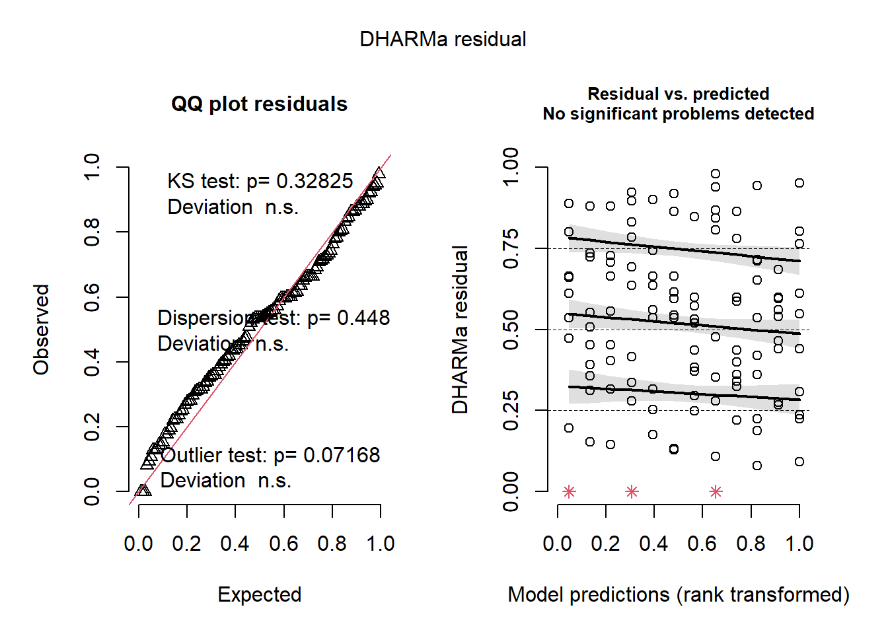

library(gsheet)
library(tidyverse)
library(car)
library(DHARMa)
library(performance)
library(ggthemes)
library(emmeans)
library(multcomp)
library(multcompView)
library(epifitter)
library(AgroR)Estatística Inferencial
Bibliotecas
As seguintes bibliotecas foram carregadas para a análise dos dados:
Variável: Severidade
Importação dos dados
Os mesmos dados utilizados na análise anterior foram importados e preparados para investigar a severidade da doença em tomates afetados por A. solani ao longo do tempo:
dados <- gsheet2tbl("https://docs.google.com/spreadsheets/d/1HI1PqYYMyvwvLhMfAAs7eyA2zCqTBwQdyGtw-ILn7fU/edit?usp=sharing")
tomate <- dados |>
filter(host == "Tomato",
specie == "A. solani") |>
mutate(time = as.numeric(time),
rep = as.factor(rep),
isolate = as.factor(isolate),
sev = as.numeric(sev),
yield_f = as.numeric(yield_f),
product = as.factor(product)) |>
dplyr::select(ID, isolate, product, rep, time, sev, yield_f)
tom28 <- tomate |>
filter(time == 28)ANOVA
Uma análise de variância (ANOVA) foi realizada para investigar a influência dos produtos e isolados na severidade final da doença aos 28 dias:
anova <- lm(sev ~ product*isolate,
data = tom28)
anova(anova)Analysis of Variance Table
Response: sev
Df Sum Sq Mean Sq F value Pr(>F)
product 3 8.3179 2.77262 1067.2299 <2e-16 ***
isolate 2 0.0021 0.00107 0.4121 0.6633
product:isolate 6 0.0124 0.00207 0.7973 0.5741
Residuals 108 0.2806 0.00260
---
Signif. codes: 0 '***' 0.001 '**' 0.01 '*' 0.05 '.' 0.1 ' ' 1Verificação das Premissas
Foram verificadas as premissas da ANOVA quanto à normalidade e homogeneidade de variâncias:
check_normality(anova)Warning: Non-normality of residuals detected (p = 0.001).check_heteroscedasticity(anova)Warning: Heteroscedasticity (non-constant error variance) detected (p < .001).plot(simulateResiduals(anova))
hist(residuals(anova))Como as premissas não foram atendidas, optou-se pela transformação dos dados.
Transformação Logarítmica
Uma tentativa de transformação logarítmica foi realizada para atender às premissas da ANOVA:
anova1 <- lm(log(sev) ~ product*isolate,
data = tom28)
anova(anova1)Analysis of Variance Table
Response: log(sev)
Df Sum Sq Mean Sq F value Pr(>F)
product 3 107.027 35.676 271.0817 <2e-16 ***
isolate 2 0.076 0.038 0.2878 0.7505
product:isolate 6 0.166 0.028 0.2108 0.9727
Residuals 108 14.213 0.132
---
Signif. codes: 0 '***' 0.001 '**' 0.01 '*' 0.05 '.' 0.1 ' ' 1check_normality(anova1)Warning: Non-normality of residuals detected (p < .001).check_heteroscedasticity(anova1)Warning: Heteroscedasticity (non-constant error variance) detected (p < .001).plot(simulateResiduals(anova1))hist(residuals(anova1))A transformação logarítmica não fez com que os dados atendessem as premissas.
Transformação Logit
Outra tentativa com transformação logit foi realizada para adequação aos pressupostos:
tom_logit <- tom28 |>
mutate(logit = logit(sev))
anova2 <- lm(logit ~ product*isolate,
data = tom_logit)
anova(anova2)Analysis of Variance Table
Response: logit
Df Sum Sq Mean Sq F value Pr(>F)
product 3 245.669 81.890 438.7733 <2e-16 ***
isolate 2 0.050 0.025 0.1352 0.8737
product:isolate 6 0.437 0.073 0.3906 0.8837
Residuals 108 20.156 0.187
---
Signif. codes: 0 '***' 0.001 '**' 0.01 '*' 0.05 '.' 0.1 ' ' 1check_normality(anova2)Warning: Non-normality of residuals detected (p < .001).check_heteroscedasticity(anova2)OK: Error variance appears to be homoscedastic (p = 0.068).plot(simulateResiduals(anova2))
hist(residuals(anova2))Apesar das transformações, as premissas ainda não foram completamente atendidas. Contudo, utilizando o pacote DHARMa, as premissas foram consideradas aceitáveis para continuar a análise.
Teste de comparação de médias
Dado que o isolado não foi significativo e a interação entre isolado e produto também não, foi realizado um teste de comparação de médias apenas para o produto:
# emmeans
medias_tom <- emmeans(anova2, ~ product)
medias_tom product emmean SE df lower.CL upper.CL
Bio agent A -2.631 0.0789 108 -2.787 -2.47
Bio agent B -1.264 0.0789 108 -1.420 -1.11
Check 0.967 0.0789 108 0.811 1.12
Fungicide -2.432 0.0789 108 -2.588 -2.28
Results are averaged over the levels of: isolate
Confidence level used: 0.95 #performance
cld(medias_tom, Letters = LETTERS) product emmean SE df lower.CL upper.CL .group
Bio agent A -2.631 0.0789 108 -2.787 -2.47 A
Fungicide -2.432 0.0789 108 -2.588 -2.28 A
Bio agent B -1.264 0.0789 108 -1.420 -1.11 B
Check 0.967 0.0789 108 0.811 1.12 C
Results are averaged over the levels of: isolate
Confidence level used: 0.95
P value adjustment: tukey method for comparing a family of 4 estimates
significance level used: alpha = 0.05
NOTE: If two or more means share the same grouping symbol,
then we cannot show them to be different.
But we also did not show them to be the same. Regressão linear
Visualização dos dados
Para cada produto, foi visualizada a evolução da severidade da doença ao longo do tempo:
tomate|>
ggplot(aes(time, sev))+
geom_jitter(width = 0.05, color = "lightgrey")+
stat_summary(fun.data = "mean_cl_boot", size = 0.5, color = "black",
alpha = 0.5)+
geom_smooth(method = lm,
se = FALSE)+
facet_wrap(~product)Regressao linear simples por produto:
Check
check <- tomate |>
dplyr::filter(product == "Check")
check |>
ggplot(aes(time, sev))+
geom_point()+
stat_summary(fun.data = "mean_cl_boot", size = 0.5, color = "black",
alpha = 0.5)+
ylim(0,1)+
geom_smooth(method = lm,
se = FALSE)Análise de regressão linear simples para o produto Check:
lmc <- lm(sev ~time,
data = check)
summary(lmc)
Call:
lm(formula = sev ~ time, data = check)
Residuals:
Min 1Q Median 3Q Max
-0.253458 -0.080475 0.006281 0.084057 0.245173
Coefficients:
Estimate Std. Error t value Pr(>|t|)
(Intercept) -0.111094 0.011830 -9.391 <2e-16 ***
time 0.025573 0.000707 36.174 <2e-16 ***
---
Signif. codes: 0 '***' 0.001 '**' 0.01 '*' 0.05 '.' 0.1 ' ' 1
Residual standard error: 0.1004 on 238 degrees of freedom
Multiple R-squared: 0.8461, Adjusted R-squared: 0.8455
F-statistic: 1309 on 1 and 238 DF, p-value: < 2.2e-16AIC(lmc)[1] -418.3517Fungicida
fungi <- tomate |>
dplyr::filter(product == "Fungicide")
fungi |>
ggplot(aes(time, sev))+
geom_point()+
stat_summary(fun.data = "mean_cl_boot", size = 0.5, color = "black",
alpha = 0.5)+
ylim(0,1)+
geom_smooth(method = lm,
se = FALSE)Análise de regressão linear simples para o produto Fungicida:
lmf <- lm(sev ~time,
data = fungi)
summary(lmf)
Call:
lm(formula = sev ~ time, data = fungi)
Residuals:
Min 1Q Median 3Q Max
-0.061410 -0.009868 -0.000698 0.008177 0.076483
Coefficients:
Estimate Std. Error t value Pr(>|t|)
(Intercept) 0.0022510 0.0019824 1.136 0.257
time 0.0025412 0.0001185 21.451 <2e-16 ***
---
Signif. codes: 0 '***' 0.001 '**' 0.01 '*' 0.05 '.' 0.1 ' ' 1
Residual standard error: 0.01682 on 238 degrees of freedom
Multiple R-squared: 0.6591, Adjusted R-squared: 0.6577
F-statistic: 460.1 on 1 and 238 DF, p-value: < 2.2e-16Bio agente A
bioA <- tomate |>
dplyr::filter(product == "Bio agent A")
bioA |>
ggplot(aes(time, sev))+
geom_point()+
stat_summary(fun.data = "mean_cl_boot", size = 0.5, color = "black",
alpha = 0.5)+
ylim(0,1)+
geom_smooth(method = lm,
se = FALSE)Análise de regressão linear simples para o produto Bio agent A:
lma <- lm(sev ~time,
data = bioA)
summary(lma)
Call:
lm(formula = sev ~ time, data = bioA)
Residuals:
Min 1Q Median 3Q Max
-0.043528 -0.006263 0.000051 0.005849 0.056991
Coefficients:
Estimate Std. Error t value Pr(>|t|)
(Intercept) 4.618e-03 1.515e-03 3.049 0.00256 **
time 1.990e-03 9.051e-05 21.990 < 2e-16 ***
---
Signif. codes: 0 '***' 0.001 '**' 0.01 '*' 0.05 '.' 0.1 ' ' 1
Residual standard error: 0.01285 on 238 degrees of freedom
Multiple R-squared: 0.6702, Adjusted R-squared: 0.6688
F-statistic: 483.6 on 1 and 238 DF, p-value: < 2.2e-16AIC(lma)[1] -1404.994Bio agente B
bioB <- tomate |>
dplyr::filter(product == "Bio agent B")
bioB |>
ggplot(aes(time, sev))+
geom_point()+
stat_summary(fun.data = "mean_cl_boot", size = 0.5, color = "black",
alpha = 0.5)+
ylim(0,1)+
geom_smooth(method = lm,
se = FALSE)Análise de regressão linear simples para o produto Bio agent B:
lmb <- lm(sev ~time,
data = bioB)
summary(lmb)
Call:
lm(formula = sev ~ time, data = bioB)
Residuals:
Min 1Q Median 3Q Max
-0.144186 -0.023844 -0.001169 0.029826 0.207276
Coefficients:
Estimate Std. Error t value Pr(>|t|)
(Intercept) -0.0229350 0.0052730 -4.35 2.02e-05 ***
time 0.0073800 0.0003151 23.42 < 2e-16 ***
---
Signif. codes: 0 '***' 0.001 '**' 0.01 '*' 0.05 '.' 0.1 ' ' 1
Residual standard error: 0.04474 on 238 degrees of freedom
Multiple R-squared: 0.6974, Adjusted R-squared: 0.6961
F-statistic: 548.5 on 1 and 238 DF, p-value: < 2.2e-16AIC(lmb)[1] -806.1959Regressao linear quadrática por tratamento
Para investigar possíveis efeitos não-lineares ao longo do tempo, foram ajustados modelos de regressão linear quadrática para cada tratamento:
Check
check |>
ggplot(aes(time, sev))+
geom_point()+
geom_smooth(method = "lm",
se = FALSE,
formula = y ~poly(x,2),
color = "black")+
geom_smooth(se = FALSE)Análise de regressão linear quadrática para o produto Check:
check$time2 <- check$time^2
lm3 <- lm(sev ~time + time2,
data = check)
summary(lm3)
Call:
lm(formula = sev ~ time + time2, data = check)
Residuals:
Min 1Q Median 3Q Max
-0.162129 -0.027296 0.000534 0.022569 0.171727
Coefficients:
Estimate Std. Error t value Pr(>|t|)
(Intercept) 1.676e-02 8.449e-03 1.984 0.0484 *
time -6.392e-03 1.410e-03 -4.534 9.17e-06 ***
time2 1.142e-03 4.841e-05 23.584 < 2e-16 ***
---
Signif. codes: 0 '***' 0.001 '**' 0.01 '*' 0.05 '.' 0.1 ' ' 1
Residual standard error: 0.05498 on 237 degrees of freedom
Multiple R-squared: 0.954, Adjusted R-squared: 0.9536
F-statistic: 2459 on 2 and 237 DF, p-value: < 2.2e-16hist(residuals(lm3))AIC(lm3)[1] -706.2815y = 0.01676 - 0.006392 x Time + 0.001142 x Time² (essa é a equação da regressão)
Fungicida
fungi |>
ggplot(aes(time, sev))+
geom_point()+
geom_smooth(method = "lm",
se = FALSE,
formula = y ~poly(x,2),
color = "black")+
geom_smooth(se = FALSE)Análise de regressão linear quadrática para o produto Fungicida:
fungi$time2 <- fungi$time^2
qmf <- lm(sev ~time + time2,
data = fungi)
summary(qmf)
Call:
lm(formula = sev ~ time + time2, data = fungi)
Residuals:
Min 1Q Median 3Q Max
-0.072109 -0.004801 -0.000956 0.006179 0.065785
Coefficients:
Estimate Std. Error t value Pr(>|t|)
(Intercept) 1.295e-02 2.353e-03 5.504 9.63e-08 ***
time -1.334e-04 3.925e-04 -0.340 0.734
time2 9.552e-05 1.348e-05 7.086 1.57e-11 ***
---
Signif. codes: 0 '***' 0.001 '**' 0.01 '*' 0.05 '.' 0.1 ' ' 1
Residual standard error: 0.01531 on 237 degrees of freedom
Multiple R-squared: 0.7187, Adjusted R-squared: 0.7163
F-statistic: 302.7 on 2 and 237 DF, p-value: < 2.2e-16hist(residuals(qmf))AIC(qmf)[1] -1319.899y = 0.01295 - 0.0001334 x Time + 0.00009552 x Time²
Bio agente A
bioA |>
ggplot(aes(time, sev))+
geom_point()+
geom_smooth(method = "lm",
se = FALSE,
formula = y ~poly(x,2),
color = "black")+
geom_smooth(se = FALSE)Análise de regressão linear quadrática para o produto Bio agent A:
bioA$time2 <- bioA$time^2
qma <- lm(sev ~time + time2,
data = bioA)
summary(qma)
Call:
lm(formula = sev ~ time + time2, data = bioA)
Residuals:
Min 1Q Median 3Q Max
-0.051491 -0.004205 -0.001246 0.004861 0.049028
Coefficients:
Estimate Std. Error t value Pr(>|t|)
(Intercept) 1.258e-02 1.807e-03 6.961 3.28e-11 ***
time -4.480e-07 3.015e-04 -0.001 0.999
time2 7.110e-05 1.035e-05 6.867 5.72e-11 ***
---
Signif. codes: 0 '***' 0.001 '**' 0.01 '*' 0.05 '.' 0.1 ' ' 1
Residual standard error: 0.01176 on 237 degrees of freedom
Multiple R-squared: 0.7249, Adjusted R-squared: 0.7226
F-statistic: 312.2 on 2 and 237 DF, p-value: < 2.2e-16hist(residuals(qma))AIC(qma)[1] -1446.541y = 0.01258 - 4.480e-7 x Time + 0.0000711 x Time²
Bio agente B
bioB |>
ggplot(aes(time, sev))+
geom_point()+
geom_smooth(method = "lm",
se = FALSE,
formula = y ~poly(x,2),
color = "black")+
geom_smooth(se = FALSE)Análise de regressão linear quadrática para o produto Bio agent B:
bioB$time2 <- bioB$time^2
qmb <- lm(sev ~time + time2,
data = bioB)
summary(qmb)
Call:
lm(formula = sev ~ time + time2, data = bioB)
Residuals:
Min 1Q Median 3Q Max
-0.171930 -0.008984 -0.001804 0.011169 0.167618
Coefficients:
Estimate Std. Error t value Pr(>|t|)
(Intercept) 1.672e-02 5.599e-03 2.987 0.00312 **
time -2.534e-03 9.342e-04 -2.713 0.00716 **
time2 3.541e-04 3.208e-05 11.038 < 2e-16 ***
---
Signif. codes: 0 '***' 0.001 '**' 0.01 '*' 0.05 '.' 0.1 ' ' 1
Residual standard error: 0.03644 on 237 degrees of freedom
Multiple R-squared: 0.8001, Adjusted R-squared: 0.7984
F-statistic: 474.4 on 2 and 237 DF, p-value: < 2.2e-16hist(residuals(qmb))AIC(qmb)[1] -903.7469y = 0.01672 - 0.002534 x Time + 0.0003541 x Time²
Análise da Área Abaixo da Curva de Progresso da Doença (AACPD)
Para calcular a AACPD, os dados foram agrupados por produto, repetição e isolado, e a função AUDPC do pacote epifitter foi utilizada para calcular a área abaixo da curva de progresso da doença.
tomate3 <- tomate |>
group_by(product, rep, isolate) |>
summarise(aacpd = AUDPC(time, sev))Para visualizar a AACPD entre os diferentes produtos e isolados, um gráfico de boxplot foi criado:
tomate3 |>
ggplot(aes(product, aacpd, color = product)) +
geom_boxplot() +
scale_x_discrete(limits = c("Check", "Bio agent B", "Fungicide", "Bio agent A")) +
labs(x = "Produto",
y = "AACPD",
color = "Produto") +
theme_classic() +
theme(legend.position = "top")Para analisar estatisticamente a variação na AACPD entre os diferentes produtos, realizamos uma ANOVA.
m_tomate3 <- lm(aacpd ~ product, data = tomate3)
anova(m_tomate3)Analysis of Variance Table
Response: aacpd
Df Sum Sq Mean Sq F value Pr(>F)
product 3 614.67 204.891 2137.8 < 2.2e-16 ***
Residuals 116 11.12 0.096
---
Signif. codes: 0 '***' 0.001 '**' 0.01 '*' 0.05 '.' 0.1 ' ' 1Os resultados indicam que há uma diferença estatisticamente significativa na AACPD entre os diferentes produtos (p < 0.001).
medias_tomate3 <- emmeans(m_tomate3, ~ product)
cld(medias_tomate3, Letters = letters) product emmean SE df lower.CL upper.CL .group
Bio agent A 0.875 0.0565 116 0.763 0.987 a
Fungicide 1.013 0.0565 116 0.901 1.125 a
Bio agent B 2.092 0.0565 116 1.980 2.204 b
Check 6.439 0.0565 116 6.327 6.551 c
Confidence level used: 0.95
P value adjustment: tukey method for comparing a family of 4 estimates
significance level used: alpha = 0.05
NOTE: If two or more means share the same grouping symbol,
then we cannot show them to be different.
But we also did not show them to be the same. Conclusões:
O “Check” apresentou uma AACPD significativamente maior que os outros produtos, o que indica uma maior severidade da doença.
“Bio agent A” e “Fungicide” não diferem significativamente entre si, mas ambos têm uma AACPD significativamente menor que o “Bio agent B” e “Check”.
“Bio agent B” tem uma AACPD significativamente menor que o “Check”, mas maior que “Bio agent A” e “Fungicide”.
Estes resultados sugerem que “Fungicide” e “Bio agent A” são mais eficazes na redução da severidade da doença em comparação ao “Check” e “Bio agent B”.
Variável: Rendimento
ANOVA
Uma análise de variância (ANOVA) foi realizada para investigar a influência dos produtos e isolados no rendimento final do cultivo aos 28 dias.
anova28 <- lm(yield_f ~ product*isolate,
data = tom28)
anova(anova28)Analysis of Variance Table
Response: yield_f
Df Sum Sq Mean Sq F value Pr(>F)
product 3 5002.4 1667.47 56.5875 <2e-16 ***
isolate 2 13.7 6.85 0.2324 0.793
product:isolate 6 131.4 21.90 0.7433 0.616
Residuals 108 3182.4 29.47
---
Signif. codes: 0 '***' 0.001 '**' 0.01 '*' 0.05 '.' 0.1 ' ' 1Verificação das Premissas
Foram verificadas as premissas da ANOVA quanto à normalidade e homogeneidade de variâncias:
check_normality(anova28)OK: residuals appear as normally distributed (p = 0.701).check_heteroscedasticity(anova28)Warning: Heteroscedasticity (non-constant error variance) detected (p = 0.006).plot(simulateResiduals(anova28))hist(residuals(anova28))As premissas foram atendidas, indicando que não é necessário transformar os dados.
Teste de comparação de médias
Como o fator “product” foi identificado como significativo, realizamos um teste de comparação de médias para determinar os níveis de “product” que são significativamente diferentes entre si.
# emmeans
medias_tom28 <- emmeans(anova28, ~ product)
medias_tom28 product emmean SE df lower.CL upper.CL
Bio agent A 66.9 0.991 108 64.9 68.9
Bio agent B 65.0 0.991 108 63.1 67.0
Check 52.3 0.991 108 50.4 54.3
Fungicide 68.8 0.991 108 66.9 70.8
Results are averaged over the levels of: isolate
Confidence level used: 0.95 #performance
cld(medias_tom28, Letters = LETTERS) product emmean SE df lower.CL upper.CL .group
Check 52.3 0.991 108 50.4 54.3 A
Bio agent B 65.0 0.991 108 63.1 67.0 B
Bio agent A 66.9 0.991 108 64.9 68.9 BC
Fungicide 68.8 0.991 108 66.9 70.8 C
Results are averaged over the levels of: isolate
Confidence level used: 0.95
P value adjustment: tukey method for comparing a family of 4 estimates
significance level used: alpha = 0.05
NOTE: If two or more means share the same grouping symbol,
then we cannot show them to be different.
But we also did not show them to be the same. Os resultados indicam que há uma diferença significativa entre os produtos Check, Bio agent B e Fungicide, enquanto o Bio agent A se encontra dentro dos grupos B e C.
Análise de correlação: Severidade x Rendimento
Visualização da Correlação
Gráfico de Dispersão com Regressão Linear
Primeiro, apresentamos um gráfico de dispersão mostrando a relação entre a severidade da doença e o rendimento final, com uma linha de regressão linear ajustada:
tom28 |>
ggplot(aes(sev, yield_f))+
geom_point()+
geom_smooth(method = "lm")+
labs(x = "Severidade",
y = "Rendimento final (%)")+
theme_clean()Gráfico de Dispersão com Regressão Linear por Produto
Para entender melhor a correlação entre severidade e rendimento para cada produto, geramos gráficos de dispersão com linhas de regressão linear separadas por produto:
tom28 |>
ggplot(aes(sev, yield_f))+
geom_point()+
geom_smooth(method = "lm")+
labs(x = "Severidade",
y = "Rendimento final (%)")+
facet_wrap(~product)+
theme_clean()Boxplot do Rendimento por Produto
tom28 |>
ggplot(aes(product, yield_f, color = product))+
geom_boxplot()+
labs(x = "Produto",
y = "Rendimento final (%)",
color = "Produto")+
theme_clean()+
theme(legend.position = "top")
A visualização inicial com o gráfico de dispersão sugere a presença de uma correlação.
Análise de Correlação
Seleção das Variáveis de Interesse
tom28_2 <- tom28 |>
dplyr::select(sev, yield_f)Gráfico de Correlação
corgraph(tom28_2) Var1 Var2 cor p
2 yield_f sev -0.7914031 5.522227e-27Teste de Correlação
cor.test(tom28_2$yield_f, tom28_2$sev)
Pearson's product-moment correlation
data: tom28_2$yield_f and tom28_2$sev
t = -14.063, df = 118, p-value < 2.2e-16
alternative hypothesis: true correlation is not equal to 0
95 percent confidence interval:
-0.8500614 -0.7133524
sample estimates:
cor
-0.7914031 Análise de Correlação por Produto
Produto: Check
tom28_check <- tom28 |>
filter(product == "Check") |>
dplyr::select(sev, yield_f)
# Gráfico de correlação para Check
corgraph(tom28_check) Var1 Var2 cor p
2 yield_f sev -0.6272179 0.0002077558# Teste de correlação para Check
cor.test(tom28_check$yield_f, tom28_check$sev)
Pearson's product-moment correlation
data: tom28_check$yield_f and tom28_check$sev
t = -4.2613, df = 28, p-value = 0.0002078
alternative hypothesis: true correlation is not equal to 0
95 percent confidence interval:
-0.8054759 -0.3448804
sample estimates:
cor
-0.6272179 Produto: Bio agent A
tom28_bioA <- tom28 |>
filter(product == "Bio agent A") |>
dplyr::select(sev, yield_f)
# Gráfico de correlação para Bio agent A
corgraph(tom28_bioA) Var1 Var2 cor p
2 yield_f sev -0.1498767 0.4292317
# Teste de correlação para Bio agent A
cor.test(tom28_bioA$yield_f, tom28_bioA$sev)
Pearson's product-moment correlation
data: tom28_bioA$yield_f and tom28_bioA$sev
t = -0.80213, df = 28, p-value = 0.4292
alternative hypothesis: true correlation is not equal to 0
95 percent confidence interval:
-0.4840113 0.2224013
sample estimates:
cor
-0.1498767